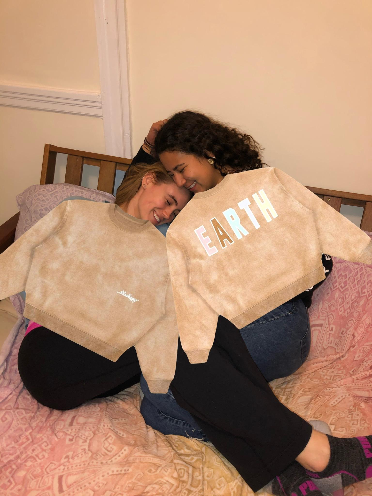
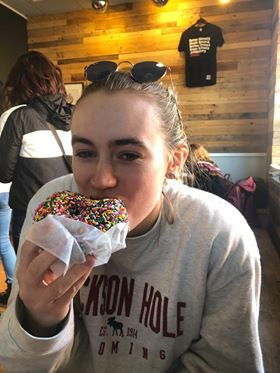
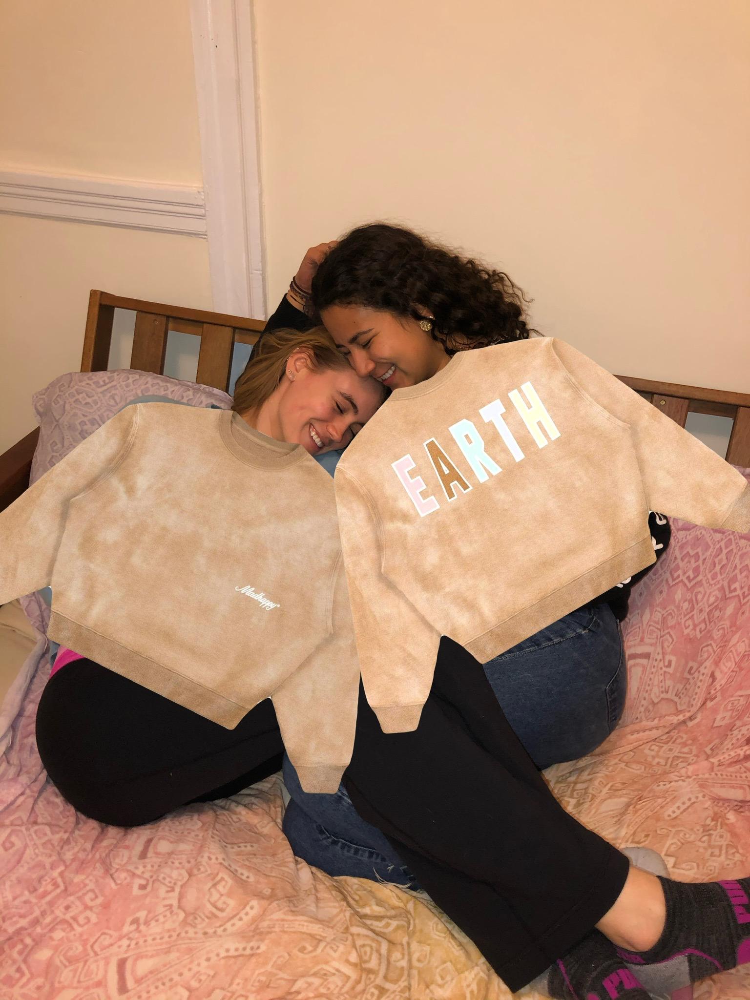

×


Hbd Paige miss your face -
Stay safe n let’s have a picnic six feet apart soon plz


Hi Paige this is Michael from April 24th. Not to confuse you with Michael of now. Ahhh time what a beautiful thing it is. I have and do appreciate u very much as a friend Paige and geting to see you grow into a full blown college educated woman has been beautiful. I am so glad to have been freinds with you all of college. You have the voice of an angel. I am wishing you the biggest 21st homie. Plase pop off so hard with Shelby
My dearest Piaget! Happy 21 my dear!!! I love you oh so much and thinking about how lucky I am to have had you throughout my entire college experience makes me EMOTIONAL. We’ve traveled the world together, lived together, car ride sang together, eaten a RIDICULOUS amount of Trader Joe’s cornbread crisps together, and damn no one can make me laugh like you, crazy gal. I’m inspired by your warmth and openness—it is so rare to find someone who would drop anything when the people they care about are down and it comes to naturally to you. After growing together the past few years (through shitty men, veryyyy drunk nights, movies and snuggles in your bed, so many laughs) I can’t wait to do forever with ya. Even though I probably can’t say that I’m the Charno who is most obsessed with you (Asher has that title) I love you forever to our sweet Teele home and back!
Dearest Piaget,
Happy 21st birthday! I am so grateful that fate took over freshman year and we ended up in the same TWO group. I would like to think that we would have eventually found each other had we not met in pre-o but regardless, we would have lost even more time not knowing each other had that happened.
I cherish you every day because you are loyal and steadfast. You inspire me because you have grit and love a challenge.
Life takes so many twists and turns, it’s nice to know that I’ll always have you along for the ride.
Whether it’s organizing a friend’s birthday, inviting friends over to your house when they need a break from school, making people feel included, or a million other things - you always put people first.
I love and appreciate you for all that you are. A huge thank you to Shelby and Tom for creating and shaping you - they did such a wonderful job üôÇ
I’m going to keep you around forever :))
Happy birthday, friend. I love you so so much
Happy birthday to one of the most spunky, kind, intelligent, and inspirational people i know! Paige you are a glowing light in the lives of everyone who loves you, and I am so grateful to be one of those people üôÇ Even though we are in quarantine right now, we are going to celebrate so hard and make SO many memories next fall that we will have made of for the lost time. I love you lady and miss you more, live it up today !!!
I look forward to being like this as soon as the world opens up...

It's funny that the more time you spend with someone, the more difficult it becomes to describe what spending time with them feels like, and what it means to you to know them. To say "I love you" is tweely depicted as the three most important words one person can say to another, but for how I feel about you that just doesn't quite cut it. Yes, I love you. But I also adore you. I admire you. And I feel that I'm a better person, living a happier life, because I know you. Happy Birthday ❤️"
My dearest, darling Paige,
To think I have known you for just (shy of) four years is extraordinary to me - it feels like a decade.  When I met you in the Steinbach Lobby for UTB auditions on my 18th birthday, there was something about you that struck me and drew me in.  You laughed uproariously when I started impersonating a stage manager for Mariah Carey and I was relieved someone found it funny.  It gave me hope that I would have a chance at being a part of something at Andover after appearing out of nowhere, knowing nobody.
It’s hard to put into words, but when I first met you, I felt so markedly transplanted and so out of place like I didn’t belong.  Similar to what we are experiencing now, my life seemed paused.  However, I was ready to slip in where I could so that I could open myself up; I wanted people to know me and I wanted to know them.
It’s hazy, but I think you walked out with me after our first Sunday morning UTB practice.  I rarely did actual homework during the daylight so I assume we probably went to the Den chatting.  In our early conversations, it was apparent that you were smarter than anyone I had met at GDS (or ever) but you weren’t pretentious.  You were/are refreshingly witty and humble and I wanted to learn more about your life and your interests.  Most of all, you listened, carefully, to what I had to say and it made me feel so valued at a time of great loneliness and aimlessness.
  At GDS, I was overwhelmed at the thought of eating with someone else during lunch and not once did I have someone over to my house on the weekend.  At Andover, all I wanted to do was hang out with you: meals, after school, on the weekends, during the weird part of the afternoon where nothing was happening, WEDNESDAY MUNCH… you were/are my home base and your personality and charm sucked me in.  Thank god Berto was already graduated because you would have been locked away having some parietal in Paul.  (I was so threatened when he came back for A/E but I was also excited to meet him lmao) 
  Fall 2016 feels like a lifetime ago but you have been a constant.   Thank you for being the person I trust most (wink) and for constantly getting me to better myself.  I really don’t know what I add to your life but thanks for tolerating me because I’m here. to. stay.  You are a beautiful, brilliant, bold, badass bitch and my life is better with you in it.
“Who’s gonna take your place, there ain’t nobody better?”
Happy 21st Birthday.
Love,
Ace
dearest paigey,
happy BIRTHDAY babyyyyy! though i wish i could be there to make u rip the bong 21 times for ur 21st, i hope you have a birthday that’s fun and lovely and incredible like u!! i will always appreciate your jokes (lil sav), our movie discussions (nemo > how to train ur dragon), and every time we’ve gotten to sing (and do some lit perc) together. thank u for always being a friend <3 here’s to hoping winky, dash, or shelby ices you today and you put on ur cutest millennial pink top and jam out to white houses (jills version obvi).
love and miss u bb!! happy 21st!!
love, lan
happy BIRTHDAY babyyyyy! though i wish i could be there to make u rip the bong 21 times for ur 21st, i hope you have a birthday that’s fun and lovely and incredible like u!! i will always appreciate your jokes (lil sav), our movie discussions (nemo > how to train ur dragon), and every time we’ve gotten to sing (and do some lit perc) together. thank u for always being a friend <3 here’s to hoping winky, dash, or shelby ices you today and you put on ur cutest millennial pink top and jam out to white houses (jills version obvi).
love and miss u bb!! happy 21st!!
love, lan
Happy birthday, Paige!!
Incredibly thankful I met you this spring. Here’s to many more long dinners and chats :) LOVE and miss you very much. Can’t wait to see you and celebrate with you someday soon!
Love,
MC
Incredibly thankful I met you this spring. Here’s to many more long dinners and chats :) LOVE and miss you very much. Can’t wait to see you and celebrate with you someday soon!
Love,
MC
Happy birthday Paige!
You are one of the craziest, strongest, most generous people I know, and I am so lucky to have u in my life. Thank you for making the Jills such a wonderful experience for me—it really would NOT be the same without you. I miss our romantic walks home together, and I can’t wait to see you.
So so SO much love ❤
Have a wonderful day bb!!
You are one of the craziest, strongest, most generous people I know, and I am so lucky to have u in my life. Thank you for making the Jills such a wonderful experience for me—it really would NOT be the same without you. I miss our romantic walks home together, and I can’t wait to see you.
So so SO much love ❤
Have a wonderful day bb!!
Hbd Paige miss your face -
Stay safe n let’s have a picnic six feet apart soon plz
Pagine!! I can‚Äôt believe you‚Äôre 21!! Cheers to legally smoking that good stuff üòéü§ë
and serving looks in the club üòâ I hope you have some cake today that‚Äôs as good as
that iconic chocolate cake freshman year üôÇ I‚Äôm missing you, your jokes, and our
hillside boys sing alongs in quarantine rn üòû You impress me everyday with your
confidence and ofc your ability to destroy a man with one sentence üòµ I miss our TJ
runs and endless wig activities üôÇ you are an absolute legend and I‚Äôm so happy you
became one of my first friends (and wilder sisters !!) üôÇ Please enjoy these hand-picked
gems from my camera roll. Have a great day my sweet pagine and dream of Rhys tonight üòâ
(we’ll talk about him in private ;)))
- Your hef ❤️
- Your hef ❤️
dearest pagina, from our day 1 glory days (pretty sure goth is our look) to
turning teele basement into clurbb teele on the day tufts turned into harry
potter and the chamber of secrets, I just can’t express how grateful I am to
do college with you by my side lady üíõ I love your humor, your incredible voice
(seriously i miss it so much i listen to my recording of good kisser too often
i need new content send me a recordingüòè?) I love our honeymoon getaways to
wayland and bumping to mamma mia in the prius. I love you to mykonos and
paris and russia (to get an authentic spominay performance ofc) and back.
you’ll forEVER be my hillside boy, my wife, and the english muffin breakfast
sandwich to my latte. happy birthday lover, see you at barcelona wine bar for
the real celebration when this is all over;)
Greeting Paige. Lets take a journey.
To my very best friend in the whole wide world, to the bestest friend there ever was, happy birthday. Almost five years ago, you walked into Ms. Yao’s physics 400 class, sat down next to me, and my life has never been the same. From bonding over She’s The Man (I still have your candy grams you sent me signed Duke Orsena), to convincing me to take Russian, to all of our Sunday night commons dinners (when I got ice cream AND milk, i love milk more “than any other animal by product), you have been the best friend I could have asked for, and a far better friend than I deserve. You put up with me freaking out over my inability to understand calc, you got me through Nana’s death, and my last basketball game ever. I love you more than you know, and I am so proud to call you my best friend. You are full of grace and poise, of love and laughter. You are intelligent and kind when people deserve it, and sassy when they don’t. You are loved by so many people, BUT NONE MORE THAN ME. I am so proud of you. I am so thankful for you. I am thankful for you calling me and yelling MERHHHH. For our den dates where we would eat ice cream and judge people. For our many trips to Asheville (ASHEVILLE WILL NEVER BE THE SAME) and Quichi and most importantly my favorite place in the world, Wayland.
Word cannot express how much I love you, and how in awe I am that this beautiful, intelligent, charismatic lady let me be her best friend, but all I can do is say thank you for loving me, and putting up with my craziness.
Love you love you
MERHHHHHH
Can’t wait to live together and raise dauchaunds to run in a V formation
❤️ Casey
Paige, I am so glad that we met and hanging out with you and Casey is a blast! I can't wait to hand out again, wherever and whenever that might be. Happy Birthday! -Ethan
To my very best friend in the whole wide world, to the bestest friend there ever was, happy birthday. Almost five years ago, you walked into Ms. Yao’s physics 400 class, sat down next to me, and my life has never been the same. From bonding over She’s The Man (I still have your candy grams you sent me signed Duke Orsena), to convincing me to take Russian, to all of our Sunday night commons dinners (when I got ice cream AND milk, i love milk more “than any other animal by product), you have been the best friend I could have asked for, and a far better friend than I deserve. You put up with me freaking out over my inability to understand calc, you got me through Nana’s death, and my last basketball game ever. I love you more than you know, and I am so proud to call you my best friend. You are full of grace and poise, of love and laughter. You are intelligent and kind when people deserve it, and sassy when they don’t. You are loved by so many people, BUT NONE MORE THAN ME. I am so proud of you. I am so thankful for you. I am thankful for you calling me and yelling MERHHHH. For our den dates where we would eat ice cream and judge people. For our many trips to Asheville (ASHEVILLE WILL NEVER BE THE SAME) and Quichi and most importantly my favorite place in the world, Wayland.
Word cannot express how much I love you, and how in awe I am that this beautiful, intelligent, charismatic lady let me be her best friend, but all I can do is say thank you for loving me, and putting up with my craziness.
Love you love you
MERHHHHHH
Can’t wait to live together and raise dauchaunds to run in a V formation
❤️ Casey
Paige, I am so glad that we met and hanging out with you and Casey is a blast! I can't wait to hand out again, wherever and whenever that might be. Happy Birthday! -Ethan
Hi Paige this is Michael from April 24th. Not to confuse you with Michael of now. Ahhh time what a beautiful thing it is. I have and do appreciate u very much as a friend Paige and geting to see you grow into a full blown college educated woman has been beautiful. I am so glad to have been freinds with you all of college. You have the voice of an angel. I am wishing you the biggest 21st homie. Plase pop off so hard with Shelby
My dearest Piaget! Happy 21 my dear!!! I love you oh so much and thinking about how lucky I am to have had you throughout my entire college experience makes me EMOTIONAL. We’ve traveled the world together, lived together, car ride sang together, eaten a RIDICULOUS amount of Trader Joe’s cornbread crisps together, and damn no one can make me laugh like you, crazy gal. I’m inspired by your warmth and openness—it is so rare to find someone who would drop anything when the people they care about are down and it comes to naturally to you. After growing together the past few years (through shitty men, veryyyy drunk nights, movies and snuggles in your bed, so many laughs) I can’t wait to do forever with ya. Even though I probably can’t say that I’m the Charno who is most obsessed with you (Asher has that title) I love you forever to our sweet Teele home and back!
Dearest Piaget,
Happy 21st birthday! I am so grateful that fate took over freshman year and we ended up in the same TWO group. I would like to think that we would have eventually found each other had we not met in pre-o but regardless, we would have lost even more time not knowing each other had that happened.
I cherish you every day because you are loyal and steadfast. You inspire me because you have grit and love a challenge.
Life takes so many twists and turns, it’s nice to know that I’ll always have you along for the ride.
Whether it’s organizing a friend’s birthday, inviting friends over to your house when they need a break from school, making people feel included, or a million other things - you always put people first.
I love and appreciate you for all that you are. A huge thank you to Shelby and Tom for creating and shaping you - they did such a wonderful job üôÇ
I’m going to keep you around forever :))
Happy birthday, friend. I love you so so much

Happy birthday to one of the most spunky, kind, intelligent, and inspirational people i know! Paige you are a glowing light in the lives of everyone who loves you, and I am so grateful to be one of those people üôÇ Even though we are in quarantine right now, we are going to celebrate so hard and make SO many memories next fall that we will have made of for the lost time. I love you lady and miss you more, live it up today !!!
Dear Paige,
I believe in timming, I believe that the people who are meant to come into your life will at the right moment, and that is what happened with you. Mamma mia joined us a year ago and from the moment I met you, something made me trust you blindly and open up to you. Nevertheless, today, I do not know what my life would be without sing-alongs, thursday nights, trader joe's food, spontaneous facetimes, badass jams, sporadic gym adventures, shoe confussions, pants sharing, sleepovers and, above all, YOU. Thank GOD I came to your house that september afternoon; thank you universe dearest russian fuckboy was an asshole; thank you universe Henry broke my heart. If one of those things changed, I would not have you in my life, and that is something I trully cannot bear. Sometimes very bad things have to fall appart in order for something else to come together with wine, McFlurry's and snacks.
You are my bestfriend and my soulmate. You are the person whose house I would walk in the rain to in order to spend one night at the pub with. You are the sister I found in college, and that is something I have never said to anyone.
Paige, you are an inspiration, the strongest woman I know, the most badass bitch I look up to, and the person who I would go on a trip with in a heartbeat. Thank you for your unconditional love and support, for putting up with me talking about shitty boys, and for all the salmon and thursday nights. I love you so much that if you married Harry Styles I would not be jealous.
Here is to more thursdays, more pubs, more wholesome conversations, more sharing the same pant size and sharing jeans, and more... just more...
Te amo guapa
Now, lets talk about your bday gift.
I. It is from madhappy bc you make me MADHAPPY
II. I hope everytime you wear it, you feel my love because no matter where on
III. EARTH I am, I will always be here for you. And the EARTH without you would be unbearable.
I believe in timming, I believe that the people who are meant to come into your life will at the right moment, and that is what happened with you. Mamma mia joined us a year ago and from the moment I met you, something made me trust you blindly and open up to you. Nevertheless, today, I do not know what my life would be without sing-alongs, thursday nights, trader joe's food, spontaneous facetimes, badass jams, sporadic gym adventures, shoe confussions, pants sharing, sleepovers and, above all, YOU. Thank GOD I came to your house that september afternoon; thank you universe dearest russian fuckboy was an asshole; thank you universe Henry broke my heart. If one of those things changed, I would not have you in my life, and that is something I trully cannot bear. Sometimes very bad things have to fall appart in order for something else to come together with wine, McFlurry's and snacks.
You are my bestfriend and my soulmate. You are the person whose house I would walk in the rain to in order to spend one night at the pub with. You are the sister I found in college, and that is something I have never said to anyone.
Paige, you are an inspiration, the strongest woman I know, the most badass bitch I look up to, and the person who I would go on a trip with in a heartbeat. Thank you for your unconditional love and support, for putting up with me talking about shitty boys, and for all the salmon and thursday nights. I love you so much that if you married Harry Styles I would not be jealous.
Here is to more thursdays, more pubs, more wholesome conversations, more sharing the same pant size and sharing jeans, and more... just more...
Te amo guapa
Now, lets talk about your bday gift.
I. It is from madhappy bc you make me MADHAPPY
II. I hope everytime you wear it, you feel my love because no matter where on
III. EARTH I am, I will always be here for you. And the EARTH without you would be unbearable.
I look forward to being like this as soon as the world opens up...

It's funny that the more time you spend with someone, the more difficult it becomes to describe what spending time with them feels like, and what it means to you to know them. To say "I love you" is tweely depicted as the three most important words one person can say to another, but for how I feel about you that just doesn't quite cut it. Yes, I love you. But I also adore you. I admire you. And I feel that I'm a better person, living a happier life, because I know you. Happy Birthday ❤️"
My dearest, darling Paige,
To think I have known you for just (shy of) four years is extraordinary to me - it feels like a decade.  When I met you in the Steinbach Lobby for UTB auditions on my 18th birthday, there was something about you that struck me and drew me in.  You laughed uproariously when I started impersonating a stage manager for Mariah Carey and I was relieved someone found it funny.  It gave me hope that I would have a chance at being a part of something at Andover after appearing out of nowhere, knowing nobody.
It’s hard to put into words, but when I first met you, I felt so markedly transplanted and so out of place like I didn’t belong.  Similar to what we are experiencing now, my life seemed paused.  However, I was ready to slip in where I could so that I could open myself up; I wanted people to know me and I wanted to know them.
It’s hazy, but I think you walked out with me after our first Sunday morning UTB practice.  I rarely did actual homework during the daylight so I assume we probably went to the Den chatting.  In our early conversations, it was apparent that you were smarter than anyone I had met at GDS (or ever) but you weren’t pretentious.  You were/are refreshingly witty and humble and I wanted to learn more about your life and your interests.  Most of all, you listened, carefully, to what I had to say and it made me feel so valued at a time of great loneliness and aimlessness.
  At GDS, I was overwhelmed at the thought of eating with someone else during lunch and not once did I have someone over to my house on the weekend.  At Andover, all I wanted to do was hang out with you: meals, after school, on the weekends, during the weird part of the afternoon where nothing was happening, WEDNESDAY MUNCH… you were/are my home base and your personality and charm sucked me in.  Thank god Berto was already graduated because you would have been locked away having some parietal in Paul.  (I was so threatened when he came back for A/E but I was also excited to meet him lmao) 
  Fall 2016 feels like a lifetime ago but you have been a constant.   Thank you for being the person I trust most (wink) and for constantly getting me to better myself.  I really don’t know what I add to your life but thanks for tolerating me because I’m here. to. stay.  You are a beautiful, brilliant, bold, badass bitch and my life is better with you in it.
“Who’s gonna take your place, there ain’t nobody better?”
Happy 21st Birthday.
Love,
Ace